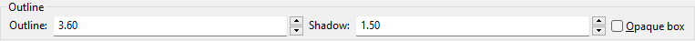

Dialogue Styling Guidelines
Dialogue styling is a vital, yet often underappreciated aspect of subtitling. It encompasses the font, colour, and positioning of dialogue, all of which can have a profound impact on the viewer's experience.
Out of all topics discussed in this handbook, this is arguably one of the most important. Many groups have different standards and opinions on what makes for good dialogue styling, but they should all generally adhere to the following guidelines.
Base Style
The base style is the default style for all dialogue. You want to make sure it's easy to read and not too distracting.
Danger
All examples on this page assume 1920×1080 video.
If you are working with some other resolution,
you may need to adjust values accordingly.
Styles used by various groups
Upsampled (640×360 ⇒ 1920×1080)
Font
Like with most things fonts, finding the right one is a matter of personal taste and can take some time. However, there are a handful of ground-rules that should be followed:
- Legibility: The font should be clear and easy on the viewer's eyes, even at smaller sizes or when viewed from a distance.
- Serifs: Fonts should ideally be sans-serif, but serifs can work if they are clean and easy to read, and fit the style and aesthetics of the show.
If you're unsure about which font to use, it's a good idea to grab established styling from the bigger subtitling groups and use that as a base for your own.
Examples of good dialogue fonts
There may be times where a serif font is preferred, based on the style of the show. The pre-established rules for dialogue fonts still apply, but there is more leeway in terms of what font to choose.
The size of the dialogue is determined by the font size. This should be set to a value that is large enough to be easily read, but not so large that it takes up too much of the screen. Values between 70 and 80 are generally recommended.
An often-overlooked part of fonts to consider is line spacing. If spaced too far apart, dialogue lines may appear disconnected to a viewer. On the other hand, spacing lines too close together can look cluttered. Due to peculiarities in ASS rendering1, this also changes the rendered font size.
Visual example
When dealing with a font with ligatures that can be confused for other characters, it is recommended to either disable them in some fashion if your subtitling renderer supports that, or in the case of ASS, set a font spacing of 0.01 in your dialogue style.
While not required, it is highly advised you use a font that supports all common characters, including characters such as the em dash (—). Historically, subtitling groups have used in-line tags to widen a regular hyphen, but this may introduce problems if the viewer overrides the style, and is also simply a less clean solution and a bad habit to get into.
If you're subtitling in languages other than English, make sure the font supports the characters of the languages you are subtitling for. This is especially important for languages with a large number of characters such as Japanese, but also languages that make common use of diacritics such as Spanish, French, and German.
If you're a commercial entity, you must also make sure that the font is licensed for commercial use. Failure to do so may result in legal action from the font's copyright holder.
Finally, you should consider the file size of the font you are using. Fonts with large character sets can be quite large, increasing the total size of your subtitles to include a lot of characters you may not need.
Colour
The colour is arguably the most important part of dialogue styling. Using clashing or hard-to-read colours will immediately detract from the viewer's experience, so it's important to choose a colour that is easy on the eyes that is still high-contrast enough to not blend into the video.
A common mantra for colour choices in the fansubbing community is:
Colours with a similar effect is yellow, but that's generally harder to read, and may cause eye strain.
Avoid changing the colour of dialogue unless there is a very specific reason to do so. Changing the colours constantly will draw too much attention to the subtitles themselves, and distract the viewer from the video. Avoid doing silly and unnecesarily distracting things like changing the border colour to match the speaker's hair colour.
Borders should be a dark colour, as this increases contrast and improves readability. In general, black is the safest choice, as it is easy on the eyes. Depending on the aesthetic of the show, other colours may be used to better blend in with the video. Examples include videos with a sepia filter, or a slight tint across the entire video. However, enabling high contrast should remain the end-goal.
In fansubbing, it is commonplace to use a different colour for overlapping dialogue that is kept at the same alignment as the dialogue it is overlapping. A distinction must be made, so most subtitling groups will use a different border colour.
Alt styles used by various groups
Subtitle location
Positioning
Dialogue should be centred on screen, and be regularly positioned at the bottom of the screen. Lines positioned in this manner are easier to read and help the viewer follow the dialogue.
Dialogue positioned on the top of the screen is generally reserved for background lines, lines that are not important for the viewer to understand, or lines that would otherwise cover important information at the bottom of the frame.
Alt styling is used for overlapping dialogue that is positioned at the same location as the current line. This should primarily be done if the dialogue is important enough for the viewer to read. If it's not important, it should ideally be displayed in a different position instead.
Dialogue should attempt to remain in a relatively same-y position as much as is reasonably possible. This helps the viewer better follow the dialogue and prevents the need to readjust their eyes. Subtle shifts in dialogue position can still be used to aid readability if it would otherwise overlap with certain parts of the video, such as text.
In certain scenes or for certain types of shows, there is a bit more leeway in being "fun" with dialogue positioning. However, this should be used sparingly, and be avoided in important scenes so as not to distract the viewer's attention. We will cover this in more depth in the shenanigans document.
Example of 'fun' positioning
Margins
Safe margins are margins that keep the dialogue centred, even when there is a large amount of text on screen. If the margins are too small, the dialogue will "hug" the edges of the screen and become more difficult to read. If the margins are too large, it will start breaking lines more aggressively, which can have a negative impact on the timing and editing of the line.
Kaleido's default margins: Left 200, Right 200, Vert 60
Margins also decide when a line of dialogue will be automatically broken. We will cover this in more depth in the editing document, but it's important to understand that you will want to avoid breaking lines into more than 2 segments. Limiting it to 2 segments at most helps to keep the dialogue from being too fragmented, and makes it easier for the viewer to read without being overwhelmed.
When manually changing the position of dialogue,
you should ideally override the margins instead of hardcoding a \pos value.
This allows for viewers to override the style,
as libass will determine that any event with a \pos value set
is not dialogue,
and thus not eligible for being overridden.
Outline
Borders
Dialogue styling should always have a border. As explained in the colours section, borders help to improve readability by increasing contrast between the dialogue and the video background.
Safe values
A safe border width is between 2.5px and 4px.
Borders should ideally not be too thick, as this is less pleasant on the eyes, but also not too thin, as that can make the dialogue blend in with the video too much.
Shadows
Shadows are a nice-to-have addition, but is not required for dialogue to be readable. It helps the dialogue "pop" out of the background, further increasing readability. Shadows should ideally always be fully black and slightly transparent. This helps to ensure that the shadow is not too heavy and does not overpower the dialogue.
Safe values
A safe shadow offset is between 1px and 2px, with a shadow transparency of 140 to 180.
Kaleido's default borders and shadows
Kaleido uses a border width of 3.6px, a shadow offset of 1.5px, and a shadow transparency of 160.

Resampling
Danger
Only resample subtitles if you're authoring them yourself! Don't blindly resample dialogue from other releases!
When dealing with different resolutions, dialogue styles should be resampled to the storage resolution. This means that if you're targetting a 720x480p anamorphic resolution video that stretches to 864x480, you should resample your dialogue to 720x480.
Warning
When dealing with anamorphic video, you must account for the display aspect ratio. If your video stretches horizontally, you should adjust the X scale value accordingly, and vice versa for vertically stretching video. Failure to do so will mean your dialogue won't scale correctly!
Dialogue at different resolutions may require additional accessibility considerations. For example, if the viewer does not scale their video in their player, the dialogue may appear too small to be readable. While you can generally speaking safely assume that the rendered subtitles will be upscaled, this is not always the case, so it is important to ensure that the dialogue is still readable at the original resolution.
-
Specifically, \fs doesn't actually determine font size, rather than line spacing. Two lines with \fs72 will have their baselines 72px apart, and be scaled accordingly, causing font size to be reduced. ↩